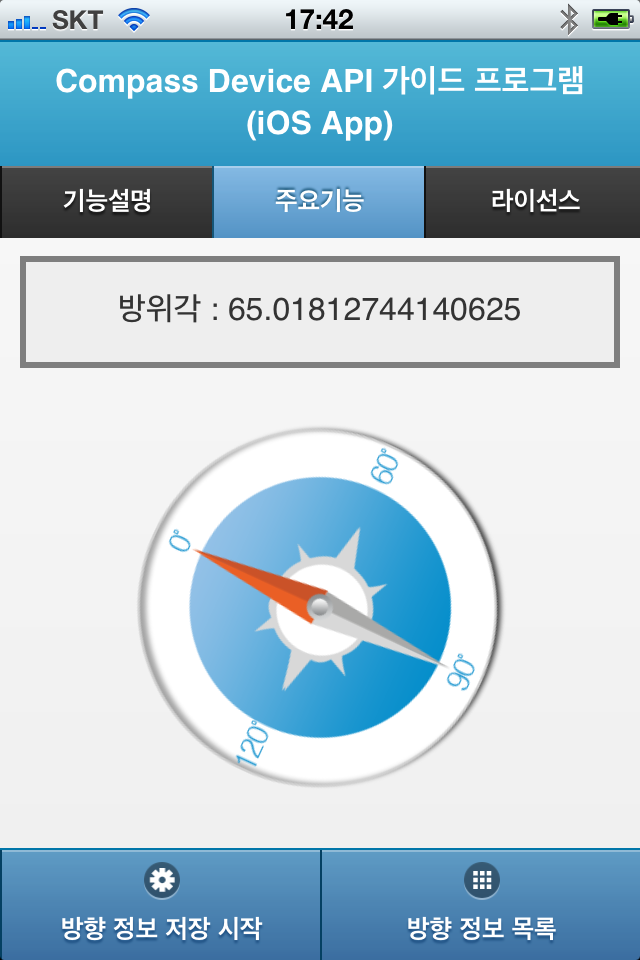
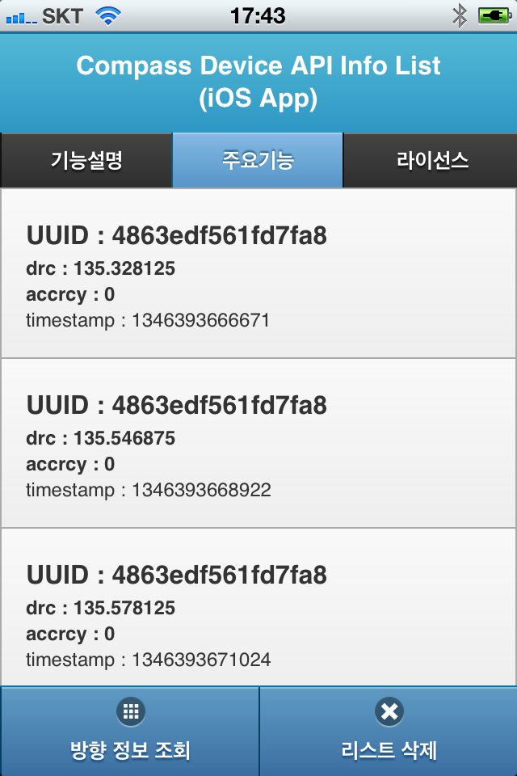

Compass API 가이드 프로그램
설명
행정안전부 전자정부 표준프레임워크 센터에서는 전자정부 표준프레임워크를 이용하여 하이브리드 앱 개발을 할 수 있는 모바일 디바이스 API 실행환경, 개발환경, 가이드프로그램을 제작 배포하고 있습니다.
Compass 가이드 프로그램은 모바일 디바이스 API 실행환경을 활용하여 하이브리드 앱을 개발하시는 분들이 구현 시 참고 및 활용될 수 있는 가이드 앱 입니다.
기능사양
- 적용 오픈 소스
Cordova v8.1.2, jQuery Mobile 1.4.5, jQuery 2.1.4, eGovMobile 1.4.6, iScroll5, Three.js - 적용 라이브러리
CFNetwork.framework, Security.framework, libz.dylib - 운영 플랫폼
iOS SDK 9 이상, 전자정부 표준프레임워크 3.9 - 개발환경
Xcode 10.3,
전자정부 표준프레임워크 개발환경 3.9 - 적용 디바이스 API
- PhoneGap : Compass API
- 전자정부 표준프레임워크 : Interface API
기능설명
- 방향 정보 조회 : 디바이스 API를 통해 현재 방향 정보를 호출하여, 방향 정보를 모니터링 창에 표시 및 나침반 이미지를 통해 방향 방향으로 도형 방향
- 방향 정보 저장 : 디바이스 API를 통해 현재 방향 정보를 호출하여, 해당 내용을 Interface API를 통해 서버에 저장
- 방향 정보 목록 : 서버에 저장 된 방향 정보 목록을 리스트 형태로 출력
- 리스트 삭제 : 서버내의 방향 정보 목록을 삭제
애플리케이션 캡처화면
- 
- 